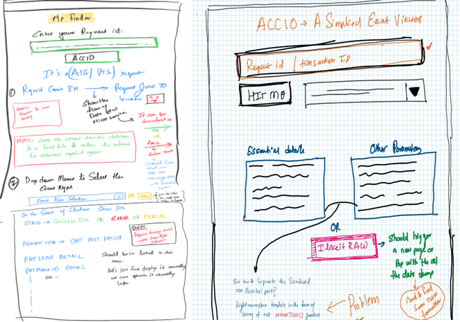

ACCIO - An event viewer
A JSON viewer for visualising the API request's
The current project that I handle in my current organization
facilitates the fintech companies to communicate with the
banking services like checking the account balances, making
payments, creating standing orders for OTT subscriptions, etc.
One of the roles we have as apart from usual backend stuff is to
analyze and resolve the queries from our financial service
provider.
Analyses and finding that we require to find the cause of a real
problem need us to follow specific steps:
- Find the unique request-id, usually the starting point of our investigation and provided by the FinTech provider.
- Check the application health at the time the request reaches our application from the FinTech provider.
- Find and analyze the whole request lifecycle, which varies from the type of transaction the user performed.
- Search the application log file to find any failures or rejections.
- Investigating the actual request and response made from the API.
The above process is too manual, and it's not ideal if we need to check the multiple requests at the same time. This whole manual process fuels my inner lazy guy to either ignore it or do something about it, and for the latter choice, I've to build something which removes all manual tasks, making the lazy guy happy.
And to get details from the database, we have to perform specific operations for every request in our queue for analyses.
Next section we will explore more about the architecture of the Web, Facebook, and SMS chat boot.
- Log in to the database.
-
Query the database table which stores all the events(lifecycle
of request) of a particular request.
- For every individual request, we have multiple events triggered to complete its lifecycle, and each such request has its own entry or row inside the database table; let's call this table LOG_TABLE.
- For analyzing any request, we have to check all the event req/res data to find the possible cause for a failure.
- If we have to check any event, we need to copy the BLOB field of that event from the LOG_TABLE and then paste it to the IDE or notepad++.
- Then we have to re-format the JSON req/res because it wasn't in a readable format when we copied it from the LOG_TABLE.
The above process is too manual, and it's not ideal if we need to check the multiple requests at the same time. This whole manual process fuels my inner lazy guy to either ignore it or do something about it, and for the latter choice, I've to build something which removes all manual tasks, making the lazy guy happy.
Designing the Frontend
After struggling with data extraction, now I know where to start.Every request identification number we receive from our source is the first piece of information we have to begin with, and for that, I need a pleasant and straightforward frontend.
I sketched the layout below and added some extra features that would help me identify the problem.
The design I started with initially changed quite a bit because some of the features I wanted to add were more on the gimmicky side rather than useful for analysis.
 And after adding some more features like the table-view to select the event and view the event information, my primary purpose of creating this application is completed.
Future Enhancement:
I believe there's always room for improvement, and I try to add those features regularly if I find something during my analysis of a new problem.The most helpful feature I wanted was to add a layout of the API call in a graphical way, which is a visual representation of the API's call made for the incoming request. GUI representation of the API's flow will help the new employees visualize the whole lifecycle of the actual request.
My current plan is to add the status page, which runs the predefined queries to extract the stats from the database and display them on the main page.
Final product:
Below is a snapshot of the main page and one sample request extraction in gif format.